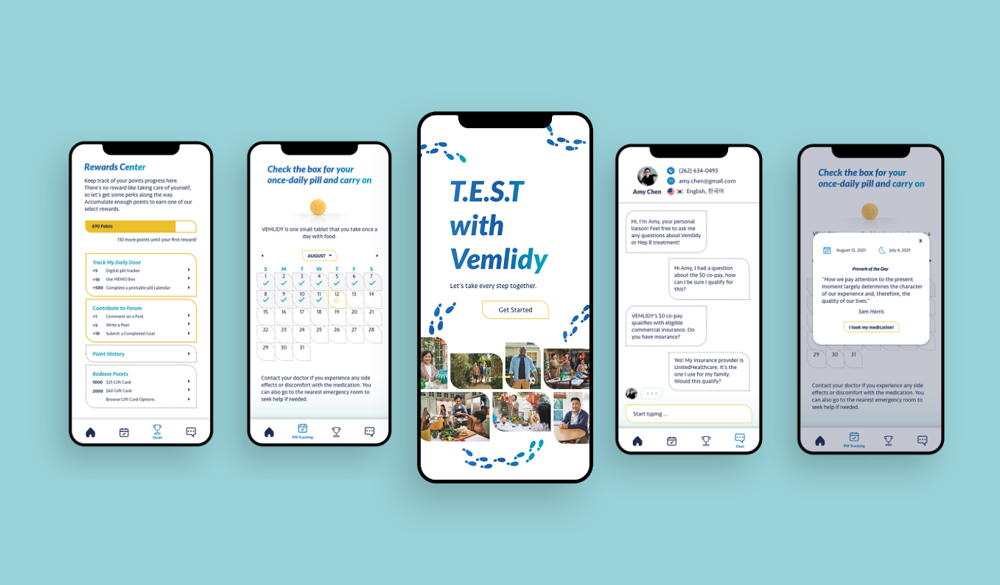

Sabrina Tian is a designer & researcher with a focus on cross-cultural design, prototyping & human-centered innovation.
SELECT WORKS ↓



T.E.S.T with Vemlidy (Confidential)
UI/UX, MEDICAL WEARABLE, SOCIAL MEDIA | NEW YORK